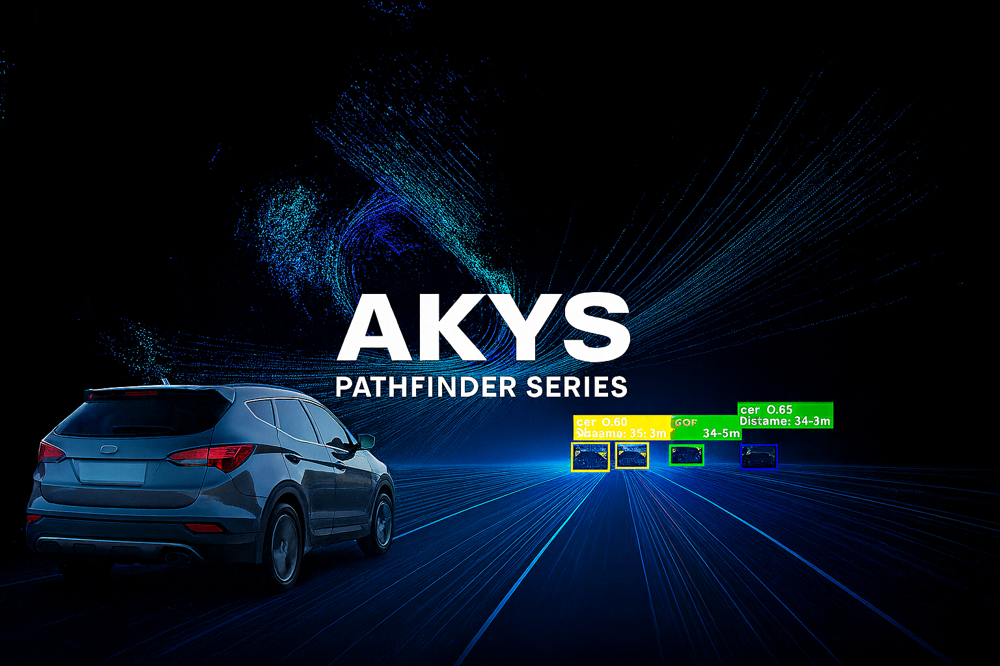

Loading live datasets…
Fetching from marketplace.akys.ai
High-fidelity datasets captured with dual Hesai P40 LiDARs, ZED 2i multi-sensory cameras, dual stereo global-shutter cameras, 5 fisheye cameras, LWIR thermal camera, GNSS- RTK, IMU, and environmental sensors. Privacy protected by default (faces and license plates blurred).
AI-ready datasets for ADAS, AV, and geospatial intelligence.
Fetching from marketplace.akys.ai
The AKYS Road Horizon Series converts real-world vehicle recordings into structured, synchronized datasets optimized for computer vision, ADAS, and machine-learning development. Each capture originates from our 2K car-mounted vision systems, processed through the proprietary AKYS pipeline to deliver high-quality, privacy-compliant, and training-ready data.
All layers are aligned across every frame and modality to ensure reliable correlation and plug-and-play ingestion into training pipelines.
Use our Horizon Series Datasets for perception, mapping, scene understanding, and ADAS experiments.
The AKYS Pathfinder Series represents the pinnacle of mobile sensing and data fusion — a fully instrumented vehicle platform engineered to capture the physical, visual, and environmental state of the world in real time. Each Pathfinder dataset is recorded using our flagship AKYS Pathfinder rig, integrating vision, LiDAR, thermal, acoustic, and environmental intelligence into one synchronized capture.
Each modality is aligned for fusion and export into industry-standard formats for mapping, research, robotics, and digital-twin generation.
Detect signage issues, faded lane markings, guardrails, potholes, vegetation encroachment, and work-zone changes. Each capture includes position, time, and context sensors for auditability.
We operate route programs that refresh high-value corridors weekly or monthly. Trend analysis highlights what changed and where attention is needed.
Receive ready-to-use bundles: georeferenced video intelligence, LiDAR PCAPs, and machine-readable JSON layers compatible with GIS tools.
Faces and license plates are blurred by default, meeting EU privacy requirements. Raw personally identifiable visuals are never delivered.
Dual Hesai LiDARs, ZED 2i stereo, dual global-shutter stereo, LWIR thermal, fisheyes, GNSS-RTK, IMU, environmental (PM2.5/PM10, VOC, CO₂, temp/humidity), and audio context.
Yes. We execute custom capture runs with weather, time-of-day, and route constraints, and quote within 24h.
Georeferenced video + LiDAR PCAP, COCO annotations, depth/segmentation overlays, GNSS tracks, and JSON layers. Delivery via secure links; enterprise SLAs available.
AKYS is a Lithuania-based spatial intelligence company headquartered in Vilnius, developing advanced multi-sensor systems for visual, environmental, and geospatial data collection. Operating across Lithuania and the Baltic region, we continuously capture, process, and structure real-world data to create high-fidelity, privacy-compliant datasets for AI, mapping, and autonomous technologies.
Our mission is to make the physical world measurable, interpretable, and accessible — from city streets to open roads — empowering researchers, developers, and municipalities with the data needed to build the next generation of intelligent mobility and digital-twin environments.
AKYS — the eyes fixed on road horizon.

We can plan and capture on demand (weather/time/route constraints). Get a quote within 24h.
Universities, municipalities, labs — ask about discounted access and joint research.
Email:
gm@akys.ai
Phone:
+370 677 72373
Telegram/Signal available on request.